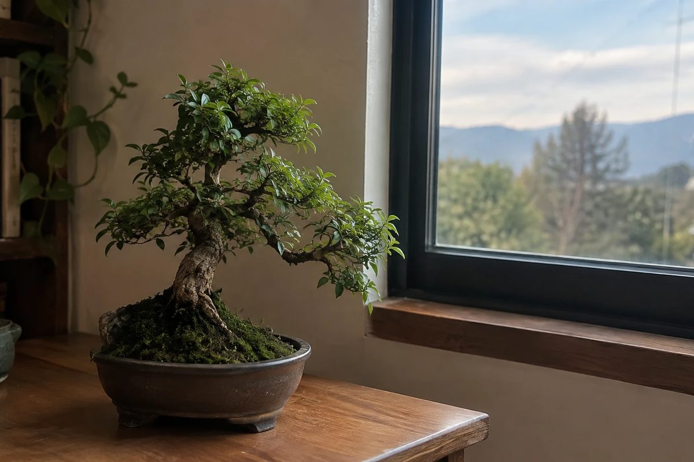

Bonsái de interior: lo que nadie te dice antes de ponerlo en tu sala
Ningún bonsái es 100% de interior, pero sí puede vivir en tu casa o en tu oficina. Dónde ponerlo, el test de la mano para saber si tu sitio sirve y las señales de que le falta luz.

La pregunta que más nos llega por WhatsApp es esta: "¿el bonsái aguanta adentro?". Y la respuesta que te conviene escuchar antes de comprar es la que casi nadie da: no existe el bonsái 100% de interior.
Un bonsái no es una planta enana ni una especie de escritorio. Es un árbol de verdad, de una especie normal, que se mantiene pequeño con técnica de poda de rama y raíz. Y los árboles viven afuera.
La buena noticia: sí puedes tenerlo dentro de casa o en la oficina. Solo tienes que saber dónde ponerlo y darle una rutina de sol que te toma dos minutos.
Por qué tu sala "se ve clara" pero al árbol no le alcanza
Tu ojo compensa la falta de luz. La fotosíntesis no.
Una habitación bien iluminada tiene una fracción mínima de la luz que hay en un patio, aunque a ti las dos te parezcan igual de claras. Por eso el bonsái en el centro de la sala, sobre una mesa bonita y lejos de la ventana, es la forma más común de perder un árbol en pocos meses.
Y hay un detalle que empeora todo: con poca luz, el sustrato tarda más en secarse. El agua se queda, la raíz no respira y aparecen los hongos. Muchos árboles que "se murieron por falta de luz" en realidad se pudrieron por la combinación de sombra y riego. Si quieres entender esa parte, lee cada cuánto regar un bonsái.
La regla práctica para tenerlo adentro
Si tu bonsái va a vivir en interior, estas tres cosas no se negocian:
- Ventana con luz directa. Que el sol le pegue de forma directa por lo menos 3 o 4 horas al día. Una cortina o un vidrio polarizado bajan muchísimo la luz que llega.
- Pegado al vidrio. Cada metro que lo alejas de la ventana, la luz cae de forma drástica. No "cerca de la ventana": junto a ella.
- Sácalo al sol dos veces por semana. Unas horas de sol de mañana en el patio, el balcón o la terraza. Esto es lo que evita que se debilite y que le entren hongos.
Si no tienes una ventana buena, una lámpara LED de cultivo encendida de 10 a 12 horas al día es una solución real, no un parche.
El test de la mano: sabe en 10 segundos si tu sitio sirve
Ponte de pie donde va a estar el árbol, cerca del mediodía, y estira la mano sobre la superficie:
- Sombra nítida, con bordes definidos: hay luz directa. Excelente sitio.
- Sombra difusa, apenas se adivina el contorno: luz media. El árbol sobrevive, pero no prospera. Necesita sus salidas al sol sin falta.
- Casi no hay sombra: ese lugar no sirve, por más lindo que se vea el árbol ahí.
Señales de que a tu bonsái le falta luz
El árbol te avisa antes de enfermarse. Fíjate en esto:
- Los brotes nuevos salen largos y flacos, con mucho espacio entre hoja y hoja.
- Las hojas nuevas son más grandes y más pálidas que las viejas.
- El árbol se inclina hacia la ventana.
- Pierde las hojas de adentro de la copa y solo queda verde en las puntas.
- Aparecen manchas oscuras o moho en hojas y tronco.
Si ves dos o más de estas señales, el problema no es el agua ni el abono. Es la luz. Muévelo a un sitio con sol directo y aumenta las salidas al exterior.
¿Qué especies aguantan mejor el interior?
Las tropicales y subtropicales toleran el interior mejor que las demás. El ficus es la más conocida por eso. Otras, como la carmona, el ligustro o la crásula, también se adaptan a una ventana con buen sol.
Ojo: tolerar no es preferir. Incluso esas especies quieren toda la luz que puedas darles.
Y hay especies que no son de interior bajo ningún concepto, como el junípero. Adentro se apaga en semanas y, lo peor, sigue viéndose verde mientras muere.
Cuidado al sacarlo al sol por primera vez
Si tu árbol viene de estar adentro, no lo saques de golpe a pleno sol. En la Sierra el índice UV llega con frecuencia a niveles extremos y una sola tarde basta para quemarle las hojas.
Hazlo por etapas durante dos semanas:
- Días 1 a 3: 1 hora de sol de mañana temprano, antes de las 9:00.
- Días 4 a 7: 2 a 3 horas de sol de mañana.
- Días 8 a 14: la mañana completa.
Si después de un día de sol ves manchas cafés secas y de borde duro, te pasaste. Retrocede una etapa y espera.
Preguntas frecuentes
¿Puedo tener un bonsái en mi escritorio de oficina?
Solo si el escritorio está junto a una ventana con sol directo, y aun así conviene sacarlo al exterior un par de veces por semana. Bajo luz artificial de oficina, sin ventana, el árbol se debilita.
¿La luz del foco de mi casa le sirve?
No. Un foco común no da la intensidad que necesita un árbol. La única luz artificial que funciona es una lámpara LED de cultivo, encendida muchas horas al día.
¿Cuántas veces por semana lo saco al sol?
Dos veces por semana, unas horas de sol de mañana. Si tu ventana recibe sol directo varias horas al día, con eso ya está en buena forma.
¿Puedo cambiarlo de sitio seguido?
Mejor no. Cada cambio de luz obliga al árbol a readaptarse. Elige su lugar fijo y muévelo solo para sus salidas al sol.
Te ayudamos a elegir según tu espacio
Cuando nos escribes, lo primero que te preguntamos es dónde va a estar el árbol. No es por protocolo: es porque de eso depende qué especie te conviene. Cada pieza sale con su ficha de cuidado, garantía de llegada sana y acompañamiento por WhatsApp durante los primeros 30 días.